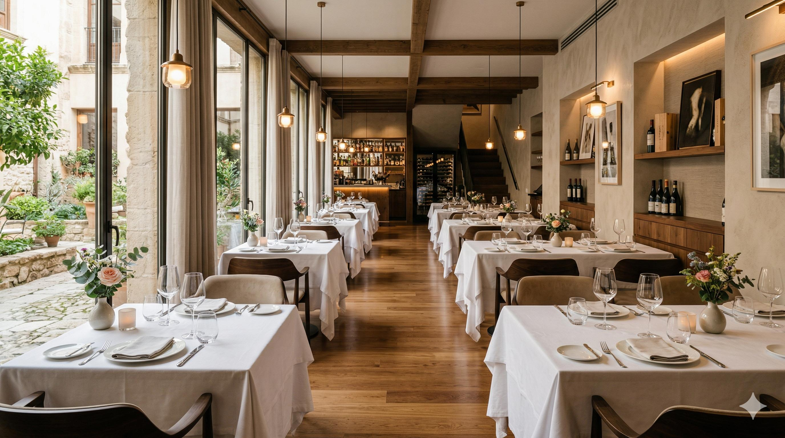
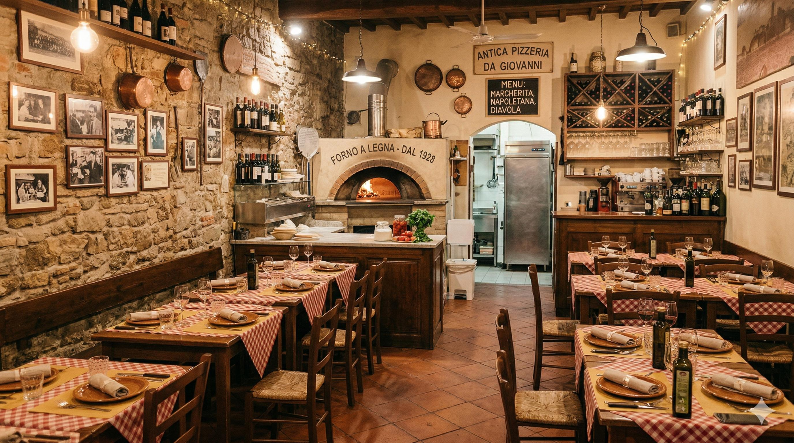
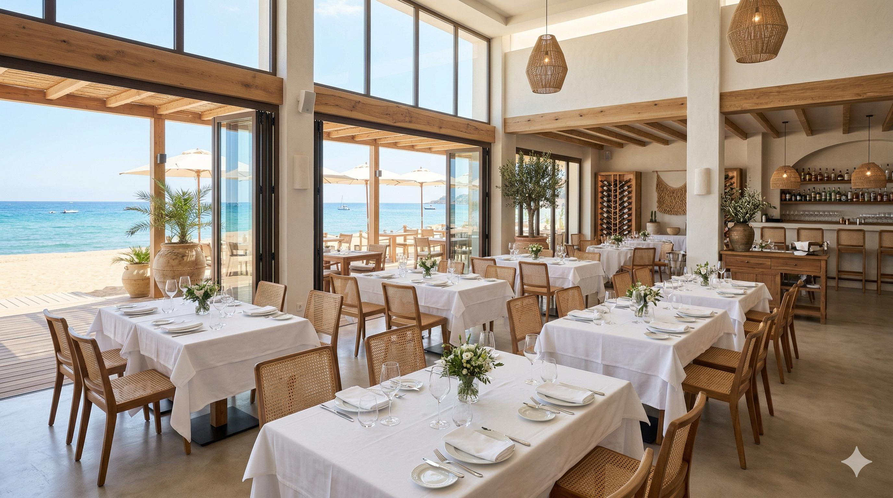
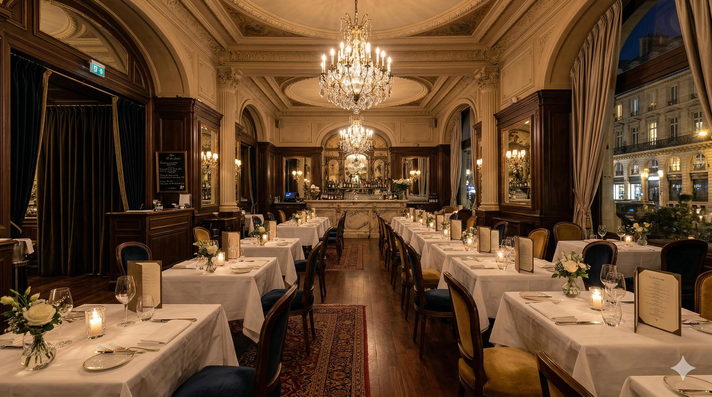
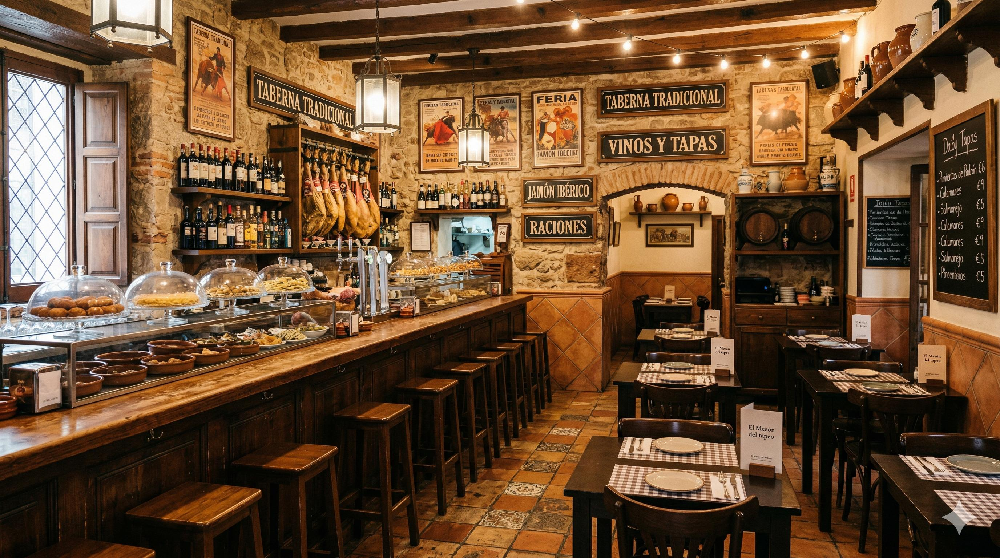

Brasería

Abrasas & Humo
El sabor ancestral del fuego y las mejores carnes maduradas en un entorno rústico y acogedor.
Calle de los Herreros, 14, 05001 Ávila Visitar RestauranteSelección de los mejores restaurantes de tu zona
El sabor ancestral del fuego y las mejores carnes maduradas en un entorno rústico y acogedor.
Calle de los Herreros, 14, 05001 Ávila Visitar Restaurante
Una experiencia de estrella Michelin en el corazón de la ciudad. Especializados en menú degustación de 12 tiempos con maridaje de autor.
Paseo de la Castellana, 95, 28046 Madrid Visitar Restaurante
Auténtica pizza napolitana de masa madre y fermentación lenta, directa desde nuestro horno de piedra.
Carrer del Consell de Cent, 312, 08007 Barcelona. Visitar Restaurante
El lujo de la alta cocina frente al Mediterráneo, especializado en arroces de autor y pescados salvajes.
Avenida del Mediterráneo, s/n, 03503 Benidorm, Alicante. Visitar Restaurante
Refinamiento galo y clásicos atemporales de la haute cuisine en un entorno palaciego.
Calle de Alfonso I, 22, 50003 Zaragoza. Visitar Restaurante
El alma de la barra española: tradición, alegría y la mejor selección de vinos y cañas.
Plaza de las Flores, 4, 30004 Murcia. Visitar Restaurante